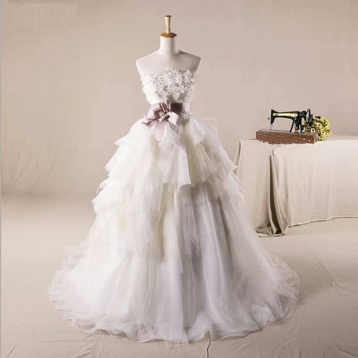
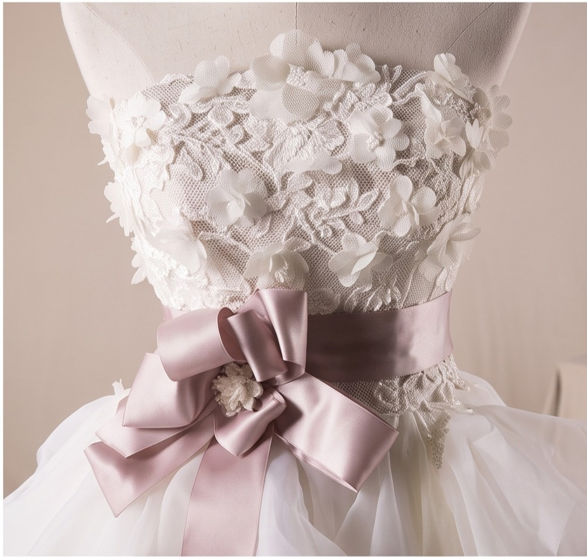
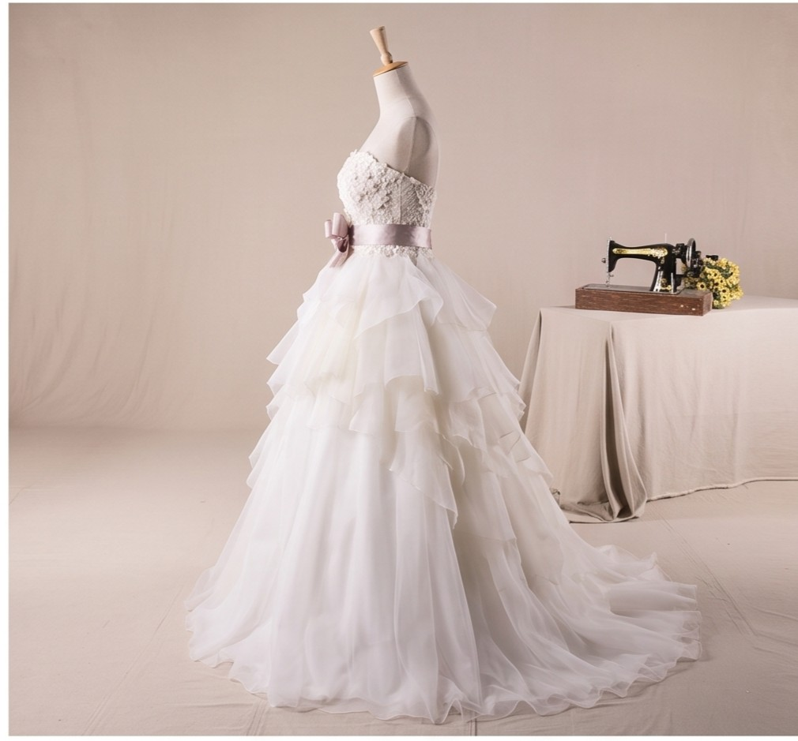
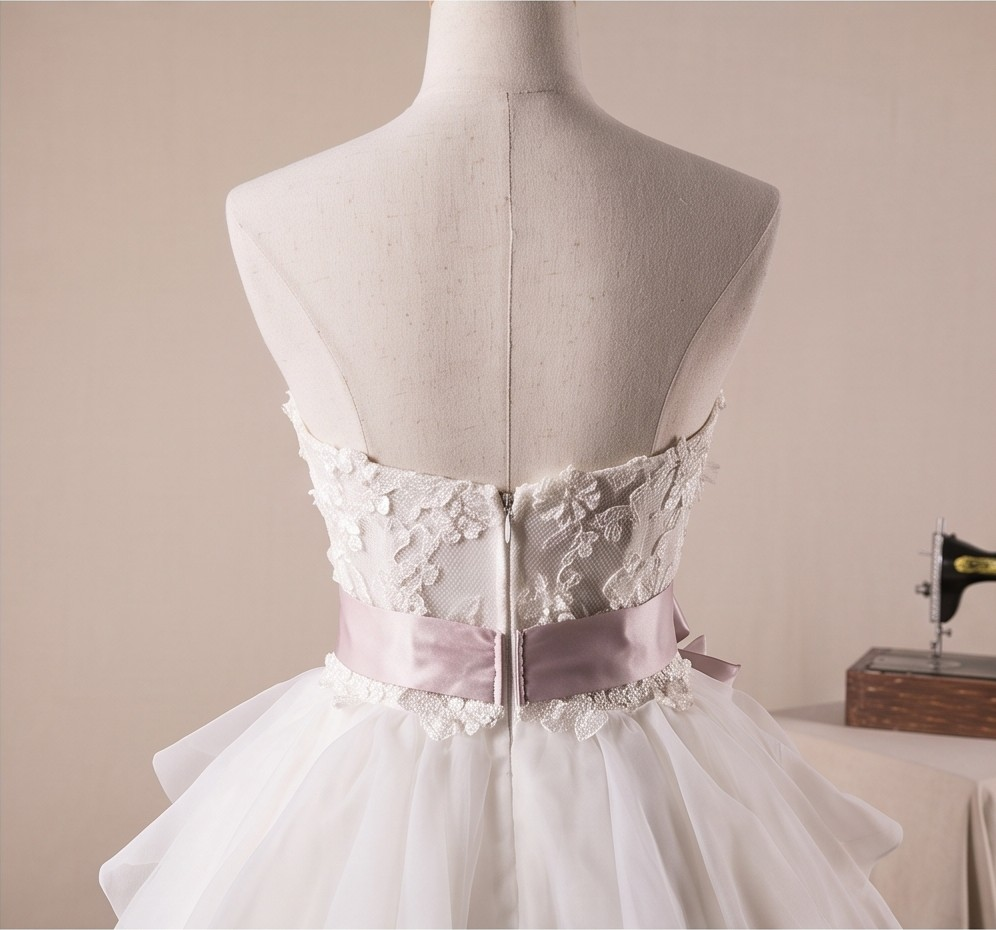

S/ 1,100.00
Deslumbrante vestido de corte princesa con una silueta amplia y voluminosa, estructurada para realzar la cintura y ofrecer una presencia de cuento de hadas.
Presenta un elegante escote palabra de honor (strapless) con el corpiño delicadamente cubierto de finos apliques florales o texturas en relieve que aportan un encanto sutil y artesanal.
El punto focal es un hermoso fajín o lazo de tono rosado pálido/malva atado a la cintura en un lateral, rematado con un lazo decorativo que añade un toque romántico y distintivo de color.
Confeccionada con múltiples capas escalonadas de volantes de tul y organza ligera que crean una caída en cascada, aportando un movimiento dinámico, textura y gran volumen al caminar.
✅ Compra realizada exitosamente